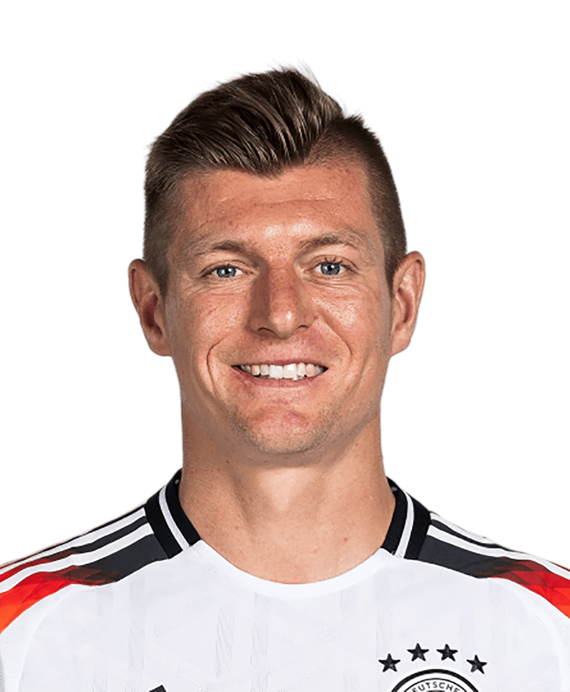

Home
The hobby I chose to focus on was soccer. Soccer is a game loved worldwide, and is played with a single ball
shared by two teams of 11 players. Regulation fields are 110-120 yards long and 70-80 yards wide. Although
at first the sport does appear simple, the niches of the game are where the brilliance of its players shine.
Soccer isn't a sport where physical attributes are the end all be all. Unless you're an extreme outlier,
(like Usain Bolt, who actually scored 2 goals in his professional debut in Australia) technical ability is
the way that most players are able to become successful. For example, Toni Kroos (pictured below) is widely
regarded as one of the greatest midfielders to ever play the sport, and is known for his passing ability and
range over the course of his career. Over his 17 years of professional play, he amassed an incredible
93.6% completion rate for his 34,115 total attempted passes. When you make the ball do the work, you don't have to
do as much yourself, and it's because of this style of play that allowed Kroos to play in over 750 games, until
he retired at 34, as a true inspiration and icon of the game.
Toni Kroos
